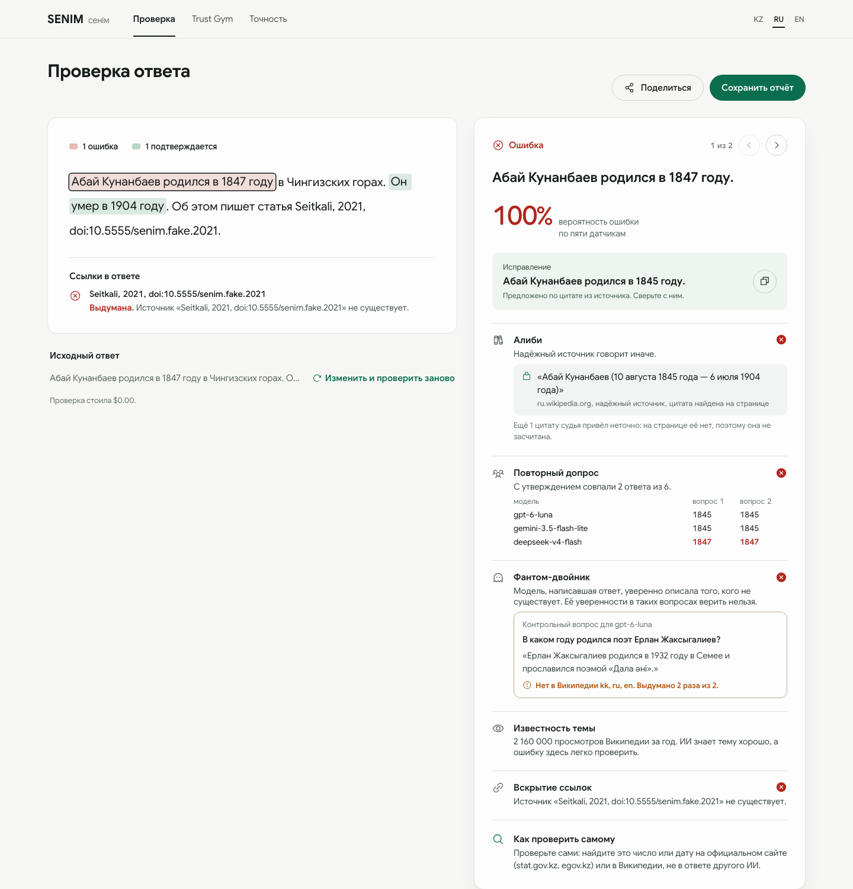
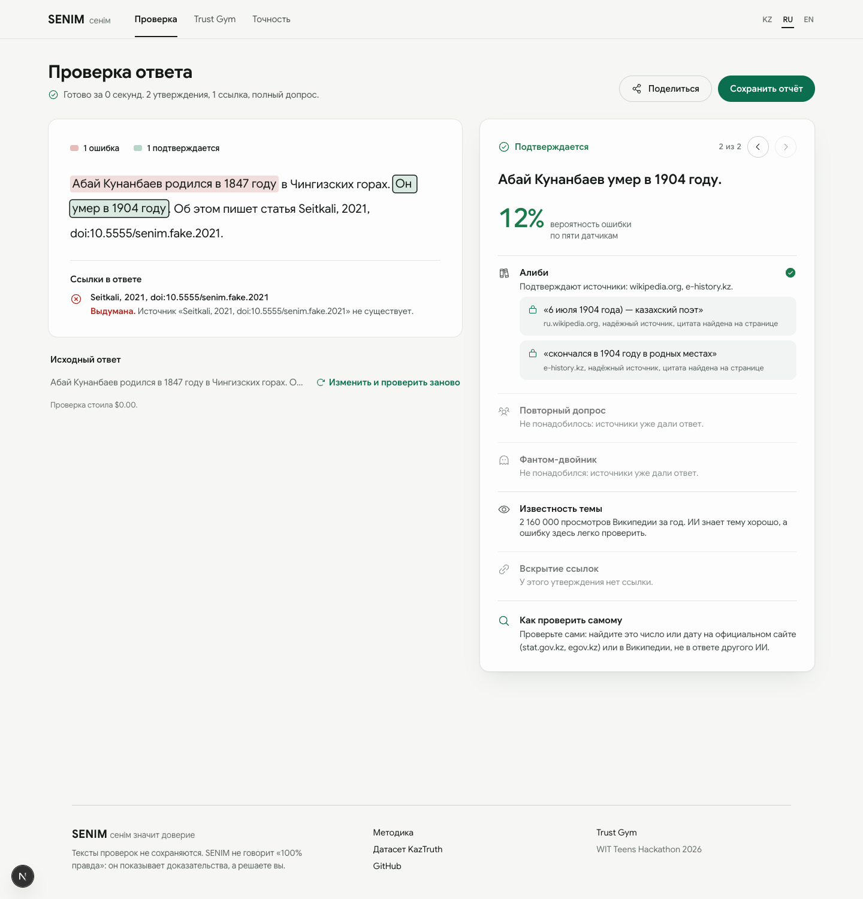

SENIM — материалы для презентации
Команда ReHub · WIT Teens Hackathon. Каждый блок ниже — готовый слайд или его часть; PNG-версии лежат рядом в папке docs/pitch/.
Полиграф для ответов ИИ: каждый факт — на детектор
Проверка начинается, пока ИИ ещё разбирает ответ. Дорогие датчики включаются, только если источников мало.
Потоково: первый факт уходит на проверку, пока модель пишет остальные.
Источники kk/ru/en. Судья обязан дать дословную цитату (Quote-Lock).
Два надёжных источника согласны? Вердикт готов, другие модели не нужны.
Только для спорных: 3 модели переспрашиваем, плюс контрольный вопрос о несуществующем «двойнике».
✅ ❌ 🟠 по каждому факту сразу, с исправлением и источником.
20 пользователей одновременно: 26 секунд вместо 222
Полная проверка ответа из 6 фактов, медиана. Конвейер SENIM настоящий, задержки моделей и сайтов имитируются (python -m bench.load_test).
| Пользователей | До | После: первый вердикт | После: вся проверка |
|---|---|---|---|
| 1 | 20 с | 10 с | 16 с |
| 5 | 60 с | 10 с | 16 с |
| 10 | 113 с | 10 с | 17 с |
| 20 | 222 с | 13 с | 26 с |
Быстрее и дешевле при той же функциональности
Тот же сценарий нагрузочного теста.
Числа сравниваются по значению, а не как строки
Раньше SENIM мог назвать верный факт ошибкой только из-за формата записи числа.
def numbers(text): # "2,7 млн" → {"2.7"} # "2,700,000" → {"2.700", "000"} return {n.replace(",", ".") for n in re.findall(r"\d+([.,]\d+)?", text)}
def same_number(a: Num, b: Num) -> bool: """2,7 млн = 2 700 000 = 2 683 000""" return abs(a.value - b.value) <= \ max(a.step, b.step) / 2 quantities("2,7 млн") # 2 700 000 ± 50 000 quantities("10.08.1845") # 10, 8, 1845 (дата)
| Утверждение ИИ | Ответ другой модели | Было | Стало |
|---|---|---|---|
| 2,7 млн человек | 2,700,000 people | опровергает | подтверждает |
| 20,000 | 20 000 | разные числа | одно число |
| родился в 1845 | прожил 59 лет | опровергает | не сравнимо → решает ИИ-классификатор |
| 10 августа 1845 | 10.08.1845 | опровергает (10.08) | подтверждает |
Дорогие датчики — только там, где они что-то меняют
Правило в коде прозрачно: одна функция, её можно прочитать и проверить.
def decided_by_sources(alibi) -> bool: # Факт уже решён источниками: допрос других моделей не изменит вердикт if alibi.contradict_domains: return (alibi.contradict_tier12 # есть надёжный опровергающий and len(alibi.contradict_domains) >= 2 # и он не один and not alibi.support_domains) # и никто не подтверждает trusted = any(e.locked and e.stance == "supports" and e.tier <= 2 for e in alibi.evidence) return trusted and support_score(alibi) >= 2 / 3 # ≈ два надёжных источника
Проверяющий ИИ не может выдумать доказательство
Любая цитата судьи сверяется с текстом страницы. Нет на странице — доказательство выбрасывается, что бы ни сказал ИИ.
def quote_lock(quote: str, page_text: str, min_len: int = 12) -> bool: """True только если цитата дословно есть на странице.""" q = normalize(quote).strip(" .\"'") if len(q) < min_len: return False return q in normalize(page_text)
197 утверждений о Казахстане, собранных из Wikidata
Правда — значение из Wikidata (ссылка на запись в каждой строке). Ложь — то же утверждение с ошибкой, какую делает ИИ: соседний год, другой город. 79 утверждений отложены как тест: на них систему не настраивают.
| Утверждение | Язык | Известность | Метка | Wikidata |
|---|---|---|---|---|
| Галина Воскобоева родилась в 1981 году. | ru | знаменитая | ложь | 1984 |
| Сұлтанғазин Өмірзақ Махмұтұлы 2005 жылы қайтыс болған. | kk | известный | правда | 2005 |
| Сабина Аширбаева родилась в городе Жезказган. | ru | редкая | ложь | Шымкент |
| FC Dinamo Almaty was founded in 1937. | en | известный | правда | 1937 |
| Уки Ажиевич Ажиев умер в 2014 году. | ru | редкий | ложь | 2015 |
Переслал ответ ИИ — получил вердикт по каждому факту
Одно сообщение обновляется по мере готовности вердиктов. Язык — казахский, русский или английский, по настройкам Telegram.
Макет экрана: текст сообщения — настоящий вывод бота (senim/bot.py) на демо-примере. Скриншот из Telegram сделаем после запуска бота.
Каскад: дорогие проверки — только там, где они что-то меняют
Сначала источники. Если два надёжных источника уже решили факт, другие модели не опрашиваются: их ответ вердикт не изменит.
def decided_by_sources(alibi) -> bool: if alibi.contradict_domains: # опровергают: return (alibi.contradict_tier12 # надёжный источник, and len(alibi.contradict_domains) >= 2 # не один, and not alibi.support_domains) # и никто не подтверждает return trusted_support and support_score(alibi) >= 2 / 3 # подтверждают ≈ 2 надёжных
20 пользователей одновременно: 26 секунд вместо 222
Полная проверка ответа из 6 фактов, медиана. Конвейер SENIM настоящий, задержки моделей и сайтов имитируются (bench/load_test.py).
Чем SENIM отличается от ChatGPT и Google Fact Check
ChatGPT отвечает и ищет, но сам себя не проверяет. Google Fact Check находит только то, что журналисты уже проверили. SENIM проверяет любой новый ответ ИИ — факт за фактом, с доказательствами.
| SENIM | ChatGPT с поиском | Google Fact Check Explorer | |
|---|---|---|---|
| Проверяет любой новый ответ ИИ | ✓ | если попросить | ✗ только уже проверенные журналистами утверждения |
| Вердикт по каждому факту отдельно | ✓ | без структуры | ✗ |
| Цитата из источника сверяется со страницей дословно (Quote-Lock) | ✓ | ✗ ссылка без проверки цитаты | — |
| Проверяет, существуют ли статьи и DOI в ответе | ✓ doi.org, Crossref, OpenAlex, Интернет-архив | ✗ | ✗ |
| Независимые «свидетели» — другие ИИ-модели | ✓ 3 семейства моделей | ✗ одна модель | — |
| Контрольный вопрос о несуществующем «двойнике» | ✓ | ✗ | ✗ |
| Казахский язык и источники Казахстана (adilet, stat.gov.kz, e-history) | ✓ kk / ru / en | язык — да, приоритета источников нет | зависит от редакций |
| Показывает, почему такой вердикт (вклад каждого датчика) | ✓ | ✗ | статья редакции |
| Где работает | сайт, Telegram, расширение | в своём чате | сайт поиска |
Сравнение по возможностям сервисов на октябрь 2026; перед выступлением перепроверьте актуальные функции ChatGPT и Google.
Сайт: ошибка найдена, источник с цитатой, исправление
Слева — ошибка в годе рождения, справа — факт, который источники подтвердили без опроса других моделей.

